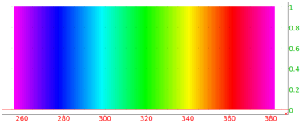
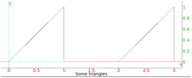

12.3.2 Parameters for changing features
Graphical features are changed by giving appropriate values to
certain parameters. Several values can be given at once with an
expression of the form feature = value1 + value2 + ….
Some values can be set using optional arguments to graphic commands,
which will set the feature locally; namely, it will only apply to that
particular graphic object. Some values can be specified at the
beginning of a line, which will set the feature globally; it will
apply to all the graphic objects created on that line. For some
features, both options are available.
Parameters for local features
Commands which create graphic objects, such as triangle, can
have optional arguments to change a features of the object.
For example, the argument color = red will make an object red.
Input:
triangle(0,1,1+i,color=red)
Output:
The features and their possible values are:
-
display or color
- These two parameter names
have the same effect. They control the following features.
-
Color
- The following values will change the color:
-
An integer from 0 to 381.
Integers from 0 to 255 correspond to the color palette, integers from
256 to 381 will be the spectrum of colors.
The program
rainbow() := {
local j, C;
C := [];
for (j := 256; j < 382; j++) {
C := append(C,square(j,j+1,color=j+filled));
}
}
will show the colors;
Input:
rainbow();
Output:

The number of a color is its x-coordinate. To see just
one color, say the color corresponding to n for 256 ≤ n ≤ 381,
enter
Input:
rainbow()[n-256]
- The names
black, white, red, blue,
green, magenta, cyan or yellow.
- Fill
- The filled value creates a solid object.
Input:
triangle(0,1,1+i,display=filled)
Output:
- Point markers
- By default, points are drawn
with a small cross. The following (self-explanatory) values
change the marker.
-
rhombus_point
-
- square_point
-
- cross_point
-
- star_point
-
- plus_point
-
- point_point
-
- triangle_point
-
- invisible_point
-
- Point width
- The values
point_width_1,…,point_width_8
change the thickness of the lines in the point markers.
- Line style
- The following (self-explanatory) values change
the style of lines.
-
solid_line
-
- dash_line
-
- dashdot_line
-
- dashdotdot_line
-
- cap_flat_line
-
- cap_round_line
-
- cap_square_line
-
- Line widths
- The values
line_width_1,…,line_width_8
change the thickness of the lines.
- thickness
- This controls line thickness, it can be
an integer from 1 to 7.
- nstep
- This sets the number of sampling points
for three-dimensional objects.
- tstep
- This sets the step size of the
parameter when drawing a one parameter parametric plot.
- ustep
- This sets the step size of the
first parameter when drawing a two-parameter parametric plot.
- vstep
- This sets the step size of the
second parameter when drawing a two-parameter parametric plot.
- xstep
- This sets the step size of the
x variable.
- ystep
- This sets the step size of the
y variable.
- zstep
- This sets the step size of the
z variable.
- frames
- This sets the number of
graphs computed when an animated graph is created with the
animate or animate3d command.
- legend
- This adds a legend to a graphic object and
should be a string. It is probably most useful when
that object is a point or a polygon. If the object is a polygon,
the legend will be placed in the middle of the last side.
Other parameters for the graphic object will specify the color or
position of the legend.
- gl_texture
- This sets an
image file to be put on the graphic object; it should be the name
of the file.
Parameters for global features
Parameters set at the beginning of a line change features on the
entire graphic screen. It only takes effect
when the line ends with a graphic command.
For example, starting the line with title=title
string will give the graphic screen a title.
Input:
title = "Some triangles"; triangle(0,1,1+i); triangle(2,3,3+i);
Output:

The parameters for global features and their possible values are:
-
axes
-
This determines whether axes are shown or hidden; a value of
0 or false hides the axes, a value of
1 or true shows the axes.
- labels
- This sets labels for the axes; it should be
a list of two strings ["x axis label","y
axis label"].
- label
-
This puts labels on the graphic screen in the following ways.
-
To set the units on the axes, it can be a list of two or three strings,
["x units","y units"] or
["x units","y units","z
units"].
- To place a string at a particular point, it can
be a list of two integers followed by a
string. The integers determine the point,
starting from [0,0] in the top left of the
screen.
- title
- This sets the title for the graphic window,
it should be a string.
- gl_texture
- This sets the wallpaper of the graphic
window to be an image file, it should be the name of the file.
- gl_x_axis_name,gl_x_axis_name,gl_x_axis_name
-
These set the names of the axes.
- gl_x_axis_unit,gl_x_axis_unit,gl_x_axis_unit
-
These set the units of the axes.
- gl_x_axis_color,gl_x_axis_color,gl_x_axis_color
-
These set the colors of the axes
labels; they take the same color options as the local parameter
color.
- gl_ortho
- This ensures that the graph is
orthonormal when it is set to 1.
- gl_x,gl_y,gl_z
-
These define the framing of the graph; they should be intervals
min..max. (They are not compatible with
interactive graphs.)
- gl_xtick,gl_ytick,gl_ztick
-
These determine the spacing of the ticks on the axes.
- gl_shownames
- This shows or hides object names, it
can be true or false.
- gl_rotation
- This sets the axis of rotation for
three-dimensional scene animations; it should be a direction vector
[x,y,z].
- gl_quaternion
- This sets the quaternion for viewing
three-dimensional scenes; it should be a fourtuple
[x,y,z,t]. (This is not compatible with
interactive graphs.)